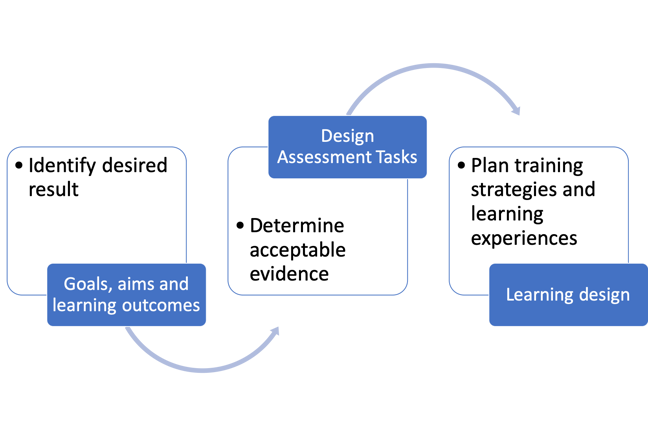
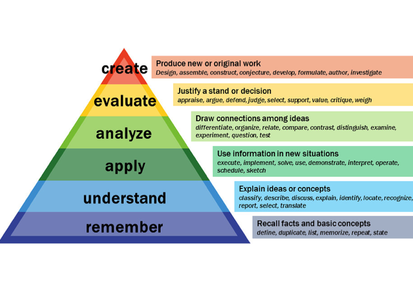
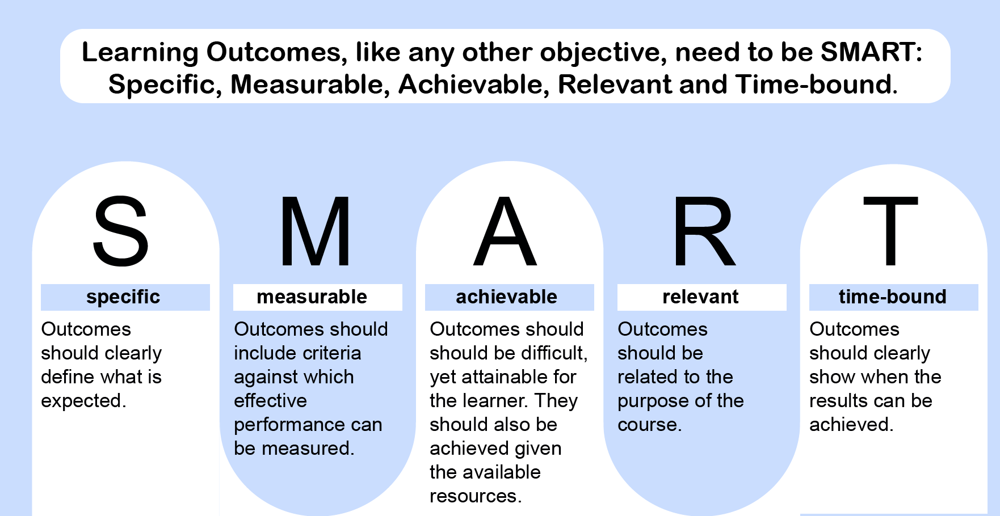
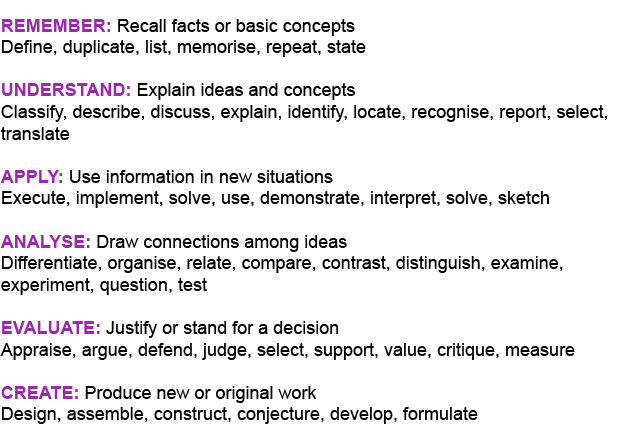

Training design
Motivation and inclusion of learners
The main motivation in the context of domain specific training such as genomics and bioinformatics, will be ‘competence motivation’. Although extrinsic rewards can affect behaviour, adult learners work/learn hard for intrinsic reasons as well.
To motivate and include your learners:
introduce social opportunities - feeling that one is contributing towards helping others, or one’s community can be very powerful motivation
allow learners to see the usefulness of their learning – and impact on others, especially the local community (including teaching others, presenting learning to others, working effectively in groups).
consider different learners’ styles and needs: some learners will prefer learning through observing, some through discussing or collaboration with others, or ‘hands-on’ exercise. Accessibility is a very important factor to consider. When designing courses/training, different learning needs should be recognised and opportunities created for everyone to take part in the process of learning/training. Universal Design for Learning (UDL) principles offer a set of concrete suggestions that can be applied to any discipline or domain to ensure that all learners can access and participate in meaningful, challenging learning opportunities. UDL principles website contains many details on each of the following main principles, which you can take with you from this course as a resource that you can study and apply later.
UDL proposes three main principles:
Provide multiple means of engagement with the subject and learning environment, to support learners’ interests. For example, provide varied classroom environments and opportunities to work both collaboratively and alone. Offer learners a choice of ways to learn.
Provide multiple means of representation of learning materials, for example, by offering learning content in different formats so that learners can choose the format that suits them. Same content can be offered in text-based, audio and video formats, or learners could be asked to explore a subject using whatever resources they can find through an online search.
Provide multiple means of action and expression in learning, to provide learners alternatives for demonstrating what they know. For example, by giving learners a choice to write an essay, give a presentation or record a video.
Further study: UDL (Universal Design for Learning)
Main principles and process of outcome driven training design
A common approach to designing a course is known as outcome driven or “backward design”. This means starting with your training goals and working backwards to decide how best to achieve them. In this course we applied the backward design approach, firstly focusing on the outcomes for the course and then on how to demonstrate that the skills have been achieved. In an outcome driven design approach, the content and activities are developed once the learning outcomes are defined.

First, you need to break down your goals into specific Learning Outcomes (LOs).
Learning Outcomes define the knowledge, skills and attitudes that learners should be able to demonstrate after instruction or a learning intervention, the tangible evidence that the teaching goals have been achieved. In one of the next step of this course, you will learn how to write effective learning outcomes. The key point is to decide what you want your learners to be able to do, to fulfill the aims and goals of your training.
As you are formulating your Learning Outcomes, consider how exactly you will measure or assess whether the outcomes have been achieved, and how learners will demonstrate that they have new knowledge and skills. This could be through some kind of testing, but it doesn’t have to be. In many cases, the outcomes can be demonstrated by learners in different ways, and we talked about this in the previous step on Universal Design for Learning.
Once you have decided the Learning Outcomes and how they will be demonstrated, you can design the learning activities which will enable students to acquire, practise and apply the knowledge and skills needed to be able to do what you have defined. Importantly, this will include finding out what the students already know and giving them the opportunity to build on that. The activities you design will enable the students to learn the subject content to be able to achieve the Learning Outcomes.
Although this design process is described as being “backward” it is really an iterative process. You may find that you revise your Learning Outcomes as you consider the practicalities of assessment or of designing learning activities. As you design particular elements of training, you will refer back to your Learning Outcomes to make sure that everything is aligned: the Learning Outcomes support the goals, the assessments allow the Learning Outcomes to be demonstrated, the learning activities allow students to practise the skills defined by the Learning Outcomes.
In summary, when focusing on learners’ needs and using the outcome-based design, you should:
Identify desired results
Determine what is the evidence of understanding or how will you assess that learners have achieved the desired outcome
Plan the learning based on knowledge required about key concepts, skills and strategies required to perform the work and
Design the activities that will achieve the required outcome.
Introduction to competencies
Before we move into the next topic of how to write learning outcomes, let’s briefly mention here one of the factors that can influence a choice of learning outcomes for a specific training that you might be trying to design.
In each field of work, there is usually a set of competencies (behaviours or technical attributes) that individuals should possess to successfully fulfil their professional roles within that field. When these competencies are grouped together for a field or a profession, they are called competency frameworks. In a course providing training for the roles defined in this way, the training designer should include the set of competencies required for each roles, and make sure that the intended learning outcomes can support/address specific or the competency framework requirements.
Competency mapping is a process of identifying key competencies needed to successfully carry out a specific job or set of tasks. Several competency frameworks exist in the field of genomics and bioinformatics, based on professional roles, from researchers to healthcare professionals (you will find some included in the References for this module). In this article we will briefly discuss the role of competency frameworks in designing a specific course, although they can also be used wider, to map existing courses within a programme, to determine which competencies are not addressed and thus determine the need for a new course.
Each competency can be divided into knowledge, skills and attitudes (KSA) needed to successfully fulfill that competency within a role. Knowledge, skills and attitudes can further be defined in terms of the level (i.e. from basic to advanced) adequate for a specific role.
If your field has a set of competencies defined for specific roles/professions and you would like to incorporate them into the design of your training, you would normally follow the process below:
Identify competencies that your training will address
Identify the level required for each competency
Consider your target audience and any pre-requisite needed (these might in some cases be already defined by the competency framework you are using)
Define objectives and learning outcomes for your training which will address the knowledge, skills and attitude defined by the chosen competencies
Flesh out curriculum and depth (level) of content
Add proposed content to cover the intended learning outcomes
Think of ways to assess the intended learning outcomes
Develop activities and training material
The iterative nature of course design and development assumes that this process is never one off and never a strict algorithmic procedure. There should also exist different evaluation mechanisms that can be planned at the stage of course design, to help with deciding on changes and improvements.
In the next step, we will concentrate on how to write learning outcomes, as part of the outcome driven design we talked about in the previous step and considered here in the context of using a competency framework.
Use of Bloom’s taxonomy to write SMART Learning Outcomes
From novices to experts
Learning has a ‘vertical’ dimension - to develop competence in some area, a learner first has to have a deep foundation of factual knowledge, then to understand the material taught and be able to organise their knowledge in a way that facilitates retrieval and application across different contexts. Further progression on this cognitive ladder builds upon these foundation levels – with the development of the higher order cognitive abilities, which include analysis, evaluation and creation.
Bloom’s taxonomy
Bloom’s simplified model of cognitive development, in practice better known as Bloom’s taxonomy, is a theoretical framework widely used in education. It consists of six levels, with the three lower cognitive levels (knowledge, comprehension, and application) upon which higher levels (analysis, evaluation, creation) are built, as illustrated in the picture.

Bloom’s digital taxonomy
Bloom’s Digital Taxonomy. The addition of new verbs that represent actions in digital world, such as blog, programme etc. helps incorporate and create digitally enhanced learning using appropriate digital tools. Watch the video to find out more.
Learning outcomes
Learning outcomes (LOs) describe what course participants should be able to do or demonstrate – in terms of particular knowledge, skills, and attitudes – by the end of the course.
For example: By the end of this programme/ course participants will be able to:
• Describe and critically evaluate a range of up-to-date genomic technologies and platforms used to sequence targeted parts of the genome or whole genomes
• Discuss and critically appraise approaches to the bioinformatics
Identifying Learning Outcomes
When identifying LOs consider what knowledge, understanding and skills you intend participants to learn through the course. The following questions may help with this:
• What do you want participants to know and be able to do by the end of the course?
• How will participants be able to use their learning? Doing what? What contexts?
• What will participants need to do in order to demonstrate if / how well they have achieved these
outcomes?
• If participants are asked ‘what did you learn during this course?’ how would you like them to answer?
Formulating learning outcomes

Writing learning outcomes
It is helpful to express LOs using an active verb (what participants will be able to do) + object + qualifying phrase to provide a context.
By the end of the course, learners will be able to:
Critically evaluate (verb) a range of up-to-date genomic technologies and platforms (object) used to sequence targeted parts of the genome or whole genomes (qualifying phrase)
Synthesise (verb) information obtained from whole genome analysis with patient information (object) to determine diagnosis, penetrance or prognosis for a number of common and rare diseases (qualifying phrase)
Vocabulary for LOs
Bloom’s taxonomy provides a potential vocabulary for articulating different kinds and level of outcome. The following table is based on Bloom’s Taxonomy of cognitive learning and provides ways of describing outcomes at different levels of knowing and understanding.

Introduction to training evaluation
Evaluation is the process of systematically generating knowledge that can support learning, quality improvement and good judgement in decision-making. Evaluation of training is important as it allows trainers to reflect on the strategy, format and content of the course and identify potential changes to improve the training impact.
The scope of the evaluation will influence what approach is most useful. You might be evaluating anything from a single learning activity, tool or technology, to a whole course or program, to the impact of educational policy at national or even international level.
One of the main principles of evaluation is that evaluation should start as soon as the initiative or strategy is being planned and implemented allowing the evaluation to inform its development and implementation from the start.
Evaluation should also be adapted to the specific context where it takes place, and be flexible to adjustment based on different contextual changes, such as staff turnover, policy change or perhaps political and economic changes that might arise.
Most importantly, evaluation should build the skills, knowledge and perspectives of all individuals involved, to self-reflect, communicate and act based on data and knowledge acquired throughout the evaluation process.
Types of evaluation
Evaluation can start before the course to form part of a needs assessment to inform the scope and content of the training event. The evaluation process can then continue during and after the course to indicate whether specific objectives have been achieved.
Formative evaluation is run during the course in order to identify problems and obstacles and make necessary adjustments in real-time. That way, it feeds back into the course usually immediately. This type of evaluation is normally carried out internally, and can focus on different aspects of the course, including performance monitoring.
Summative evaluation is run after the course and aims to look at how effectively the course has achieved the expected outcomes and impact.
Impact evaluations are a type of summative evaluation, and look at what has happened or changed as a result of an initiative and how that change occurred. It will typically look at the impact on people directly involved in an initiative (e.g. educators and learners) but also on other stakeholders.
Evaluation is often a combination of different types mentioned above, and may include pre-course needs analysis, formative evaluation during the course as well as summative evaluation of the impact or some expected course outcome.
Who benefits from evaluation?
The teachers or trainers, as evaluation is inherent to good teaching practice and allows them to see what works and what doesn’t.
The learners currently taking the course as their performance and improvement can be monitored and responded to appropriately.
Learners who have completed the course, helping them to reflect on and evidence the impact of the course, in order to demonstrate CPD requirements or further their careers.
Future learners on the course who will benefit from improvements
The organisation running the course who can address accountability and QA benchmarks.
Further reading: Kellogg’s Evaluation Guide